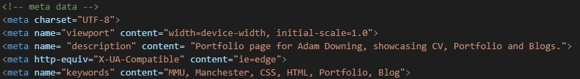

Coding
I spent a large amount of time at the beginning of this term re-teaching myself HTML and CSS due to how long it had been since I last coded. Once I had gone over a few courses and practiced the majority of the languages and optimal practices came back to me, fairly quickly in fact. Whilst coding I ensured that I added comments for each section so that I could quickly locate sections of code when needed and if someone else was looking at my code it was not overwhelming. Furthermore, for my CSS I used individual files for each page so that when coding I did not have to scroll down a single file and struggle finding certain code. I have ensured that I have indented the code so that it is easier to see the structure and I have ensured to lay it out in a logical order, so that when I need to reference the code I can find it easily.
Optimisation
To start with I insured that all of my images have been optimised, this helps to reduce the file size so that the web page loads quickly. As I used an older image from my phone camera for the hero image, I decided to use a free online software called ‘PhotoPea’ to convert it to a JPEG format. As it is the largest photo on my site, I was worried when it came to reducing the file size as I still wanted it to be high quality on any resolution. As for the rest of the images on my site I have acquired them from a royalty free site called ‘Unsplash’. For all of the images I have ensured that they’re responsive so that they function on any device within reason.
SEO Integration
To ensure that my site can be found through search engines is key if I wish to be noticed by potential employers and anyone in general, the more people who visit my site, the better. To enable me to do this I have used a variety of meta data in the head tag of my pages. The use of key words is crucial so that when these words are entered into the search engine, then there is a higher chance of my site being seen.
Users trust search engines and having a presence in the top positions for the keywords the user is searching, increases the web site’s trust (Chris, 2019).
Since the meta data is vital, I ensured that I included key information that I would be looking for in a site, such as the developers name, profession and where they are based. Furthermore, I have used the ‘description’ tag which I find suitable so that users get a brief overview of what is within the site.
References
- Photo Pea Website. 2019. [ONLINE] Available at: https://www.photopea.com/ . [Accessed on 21st Ocotber].
- Reliablesoft Website. Alex Chris. 2019. [ONLINE] Available at: https://www.reliablesoft.net/what-is-search-engine-optimization-and-why-is-it-important/ . [Accessed on 18th Ocotber].
- Unsplash Website. 2019. [ONLINE] Available at: https://unsplash.com/ . [Accessed on 20th Ocotber].